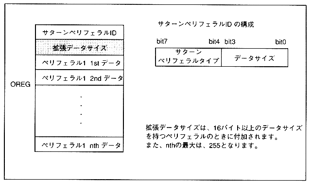

Peripheral data configuration is shown in Figure 3.12. Peripheral data consists of a Saturn peripheral ID and peripheral data. The actual size of the peripheral data excluding the Saturn peripheral ID is 255 bytes.
Figure 3.12 Peripheral data configuration
